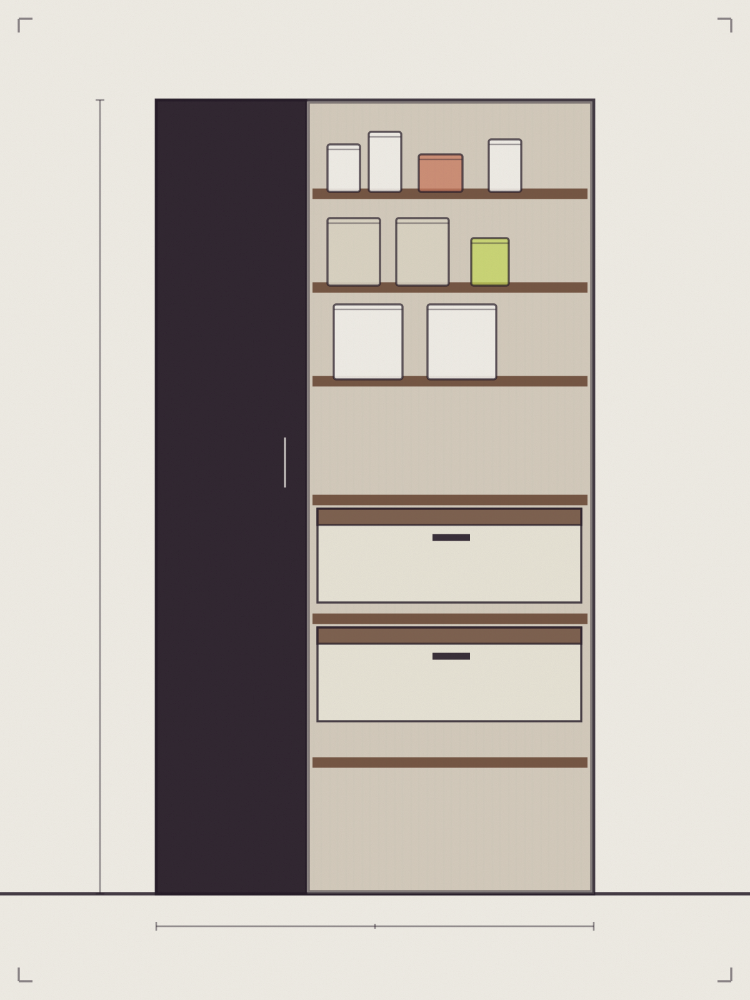
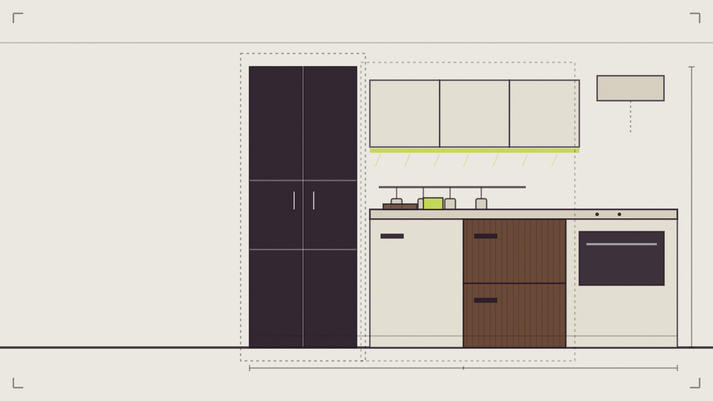
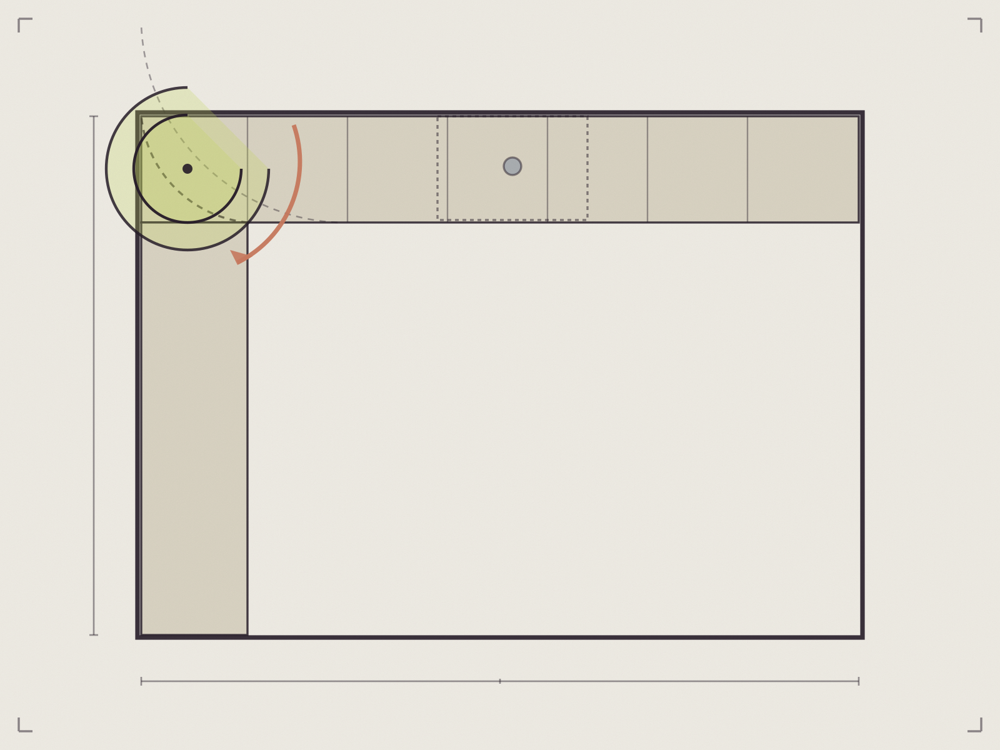
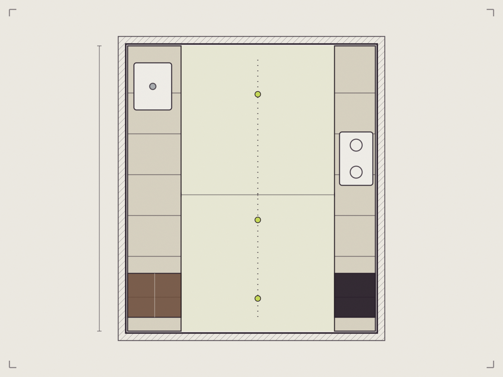

Inspiracja demonstracyjna
Strefa 01 · Zapasy
Zapasy
Produkty trafiają tam, gdzie można je szybko odłożyć i łatwo kontrolować.
Nieoficjalna koncepcja demonstracyjna — projekt nie jest oficjalną stroną firmy.
Kraków · meble na wymiar
Nie zaczynamy od katalogu frontów. Najpierw sprawdzamy, jak korzystasz z przestrzeni — gdzie odkładasz zakupy, ile potrzebujesz blatu i co powinno być zawsze pod ręką.

01 Przechowywanie
02 Przygotowanie
03 Gotowanie
Rytm stref — pełna sekwencja niżej
Ta sama kuchnia może wyglądać podobnie, a działać zupełnie inaczej. Wybierz scenariusz, który brzmi znajomo — plan obok pokaże, co wtedy sprawdzamy w układzie.
Plan funkcjonalny — demo interakcji skala poglądowa
Najczęściej używane rzeczy blisko siebie. Krótsza droga między lodówką, blatem i miejscem na śniadanie.
Więcej niż jedna wygodna strefa pracy i taki układ, który nie zmusza domowników do ciągłego mijania się.
Każdy centymetr ma zadanie, ale wnętrze nie powinno wyglądać ciężko ani ciasno.
Przechowywanie zaplanowane od środka — z miejscem na produkty, sprzęty i rzeczy używane tylko okazjonalnie.
Poznajemy przestrzeń, potrzeby i pomysły. Warto przygotować zdjęcia, podstawowe wymiary albo rzut, jeśli są dostępne.
Po ustaleniu zakresu otrzymujesz wycenę. Kolejny etap pozwala zobaczyć planowaną zabudowę i dopracować decyzje.
Gotowe meble są dostarczane i montowane w ustalonym terminie.
Szczegóły procesu, terminy i warunki wymagają potwierdzenia przez firmę.

Inspiracja projektowa — materiał demonstracyjnyGłęboki narożnik, do którego nikt nie sięga. Najtrudniejsze centymetry zabudowy zostają martwą strefą.
Zamiast martwej przestrzeni — mechanizm i podział zaplanowane pod rzeczy, które naprawdę będą tam przechowywane.

Inspiracja projektowa — materiał demonstracyjnyKażda głębsza szafka zabiera przejście, a blaty kończą się, zanim zdążysz cokolwiek rozłożyć.
Więcej miejsca do pracy bez optycznego zamykania pomieszczenia — z pilnowanym wymiarem przejścia.
 Inspiracja projektowa — materiał demonstracyjny
Inspiracja projektowa — materiał demonstracyjny
Rzeczy potrzebne codziennie, które nie powinny być widoczne przez cały dzień.
Spokojna forma na zewnątrz i dokładnie rozplanowane wnętrze zabudowy, które otwiera się tylko wtedy, gdy jest potrzebne.
Sceny poglądowe — nie przedstawiają udokumentowanych realizacji firmy.
Rzut, kilka zdjęć, wymiary, inspiracje albo po prostu lista rzeczy, które nie działają w obecnej kuchni — to wystarczy, aby rozpocząć rozmowę.